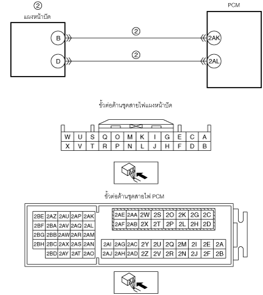

ไฟเตือนตรวจเช็คเครื่องยนต์ติดสว่าง NO.2 [SKYACTIV-G 2.0, SKYACTIV-G 2.5]
id0103g3205000
|
2 |
ไฟเตือนตรวจเช็คเครื่องยนต์ติดสว่าง |
|---|---|
|
คำอธิบาย
|
• ไฟเตือนตรวจเช็คเครื่องยนต์ติดสว่างอย่างไม่ถูกต้อง
|
|
สาเหตุที่เป็นไปได้
|
• ไฟเตือนตรวจเช็คเครื่องยนต์ติดสว่างเกี่ยวกับการปล่อยมลภาวะ (รหัสวิเคราะห์ปัญหาถูกเก็บไว้ใน PCM)
• ชุดสายไฟระหว่างขั้วต่างๆ ต่อไปนี้ลัดวงจรลงกราวด์:
• ชุดสายไฟระหว่างขั้วต่างๆ ต่อไปนี้ขาดวงจร:
• แผงหน้าปัดบกพร่อง
|
|  | |
ขั้นตอนการวิเคราะห์ปัญหา
|
ขั้นตอน |
การตรวจสอบ |
ผลลัพธ์ |
การดำเนินการ |
|---|---|---|---|
|
1
|
ตรวจสอบรหัสวิเคราะห์ปัญหาของ PCM
• เรียกดูรหัสวิเคราะห์ปัญหาโดยใช้ M-MDS
• มีรหัสวิเคราะห์ปัญหาปรากฏขึ้นหรือไม่
|
Yes
|
ไปที่การตรวจสอบรหัสวิเคราะห์ปัญหานั้นๆ
|
|
No
|
ไปที่ขั้นตอนถัดไป
|
||
|
2
|
ตรวจสอบแผงหน้าปัด
• ตรวจสอบแผงหน้าปัด
(ดูที่ การตรวจสอบแผงหน้าปัด)
• มีความบกพร่องใดๆ หรือไม่
|
Yes
|
เปลี่ยนแผงหน้าปัด
(ดูที่ การถอด / การติดตั้งแผงหน้าปัด)
|
|
No
|
ตรวจสอบการลัดวงจรหรือวงจรขาดระหว่างขั้วต่างๆ ต่อไปนี้:
• ขั้ว B ของแผงหน้าปัด — ขั้ว 2AK ของ PCM
• ขั้ว D ของแผงหน้าปัด — ขั้ว 2AL ของ PCM
ซ่อมหรือเปลี่ยนชุดสายไฟถ้าจำเป็น
|
||
|
3
|
ตรวจสอบผลการทดสอบ
• ถ้าปกติ ให้กลับไปที่ดัชนีการวิเคราะห์ปัญหาเพื่อแก้ไขอาการปัญหาเพิ่มเติม
• ถ้าความบกพร่องยังมีอยู่ ให้ตรวจสอบข้อมูลการบริการที่เกี่ยวข้อง และทำการซ่อมหรือวิเคราะห์ปัญหา
|
||